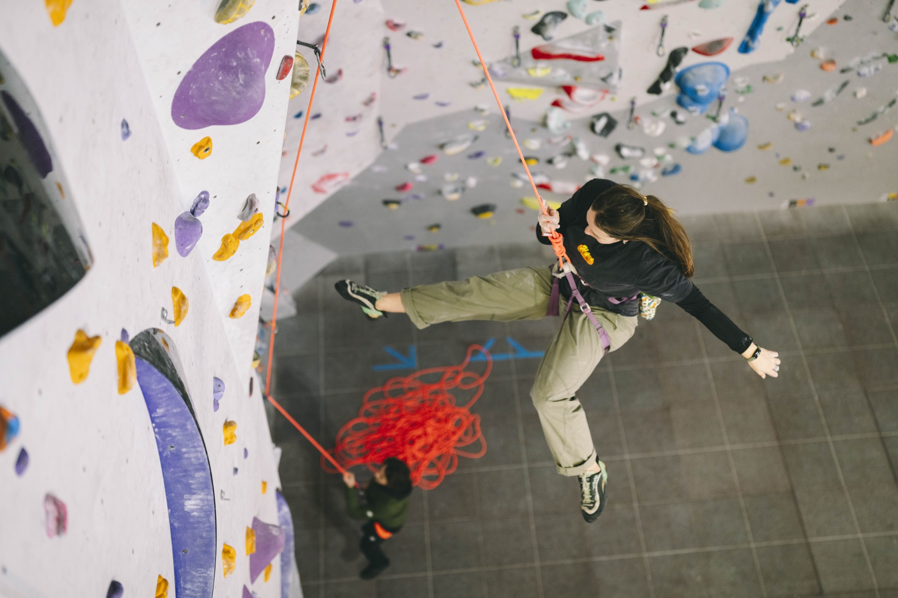
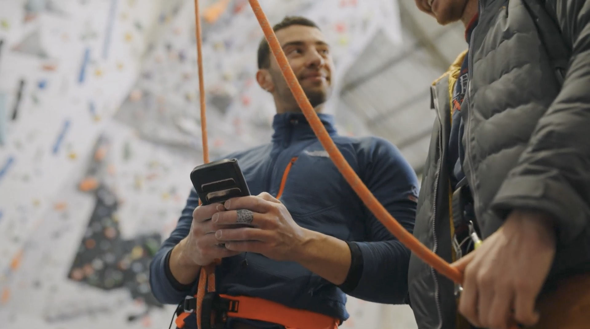

An interactive online workbook for climbers who want to enjoy climbing more — without fear getting in the way.
This isn't about becoming fearless. It's about learning how to climb confidently with fear.
By Dr Fin Haley — Clinical Psychologist & Rock Climbing Instructor
In partnership with
Sound Familiar?
You know the moves are there. But the moment you get above the clip — fear takes over. Not because you lack ability. Because fear hasn't been trained.
"Fear changes through experience, not avoidance. The toolkit is built on the gold-standard psychological approach for overcoming fear."
What's Included
A step-by-step workbook guiding you through the psychological side of fear in climbing.
Practical video guidance with each chapter to apply concepts directly to your climbing sessions.
A progressive ladder of exercises — each step challenging but manageable, building trust in the rope and your body.
Why This Course Works
Most climbers try to overcome fear by avoiding falls, waiting to feel confident, or hoping fear will disappear with time. It doesn't.
The toolkit is built around exposure therapy — the gold-standard psychological approach for overcoming fear. You'll reduce fear safely, build trust in the rope, and stay present under pressure.

The Method
Every step is designed to feel challenging, but manageable. Each one builds on the last — expanding your comfort zone without overwhelming it.
Get Early AccessWho This Is For
Whether you're climbing your first lead routes or pushing your limit grade — the principles remain the same.
The Curriculum
Part 1 — Foundations
Part 2 — Practical Application
The Outcome
Committing to moves without freezing
Falling without panic — trusting the rope
Climbing at your true limit
Feeling focused instead of overwhelmed
Enjoying climbing again
Better movement & focus under pressure
What climbers often discover
Not because fear vanished — because they learned how to work with it.
Early Access
Join the waitlist and be first to access the Fear of Falling Toolkit.
By Dr Fin Haley — Clinical Psychologist & Rock Climbing Instructor